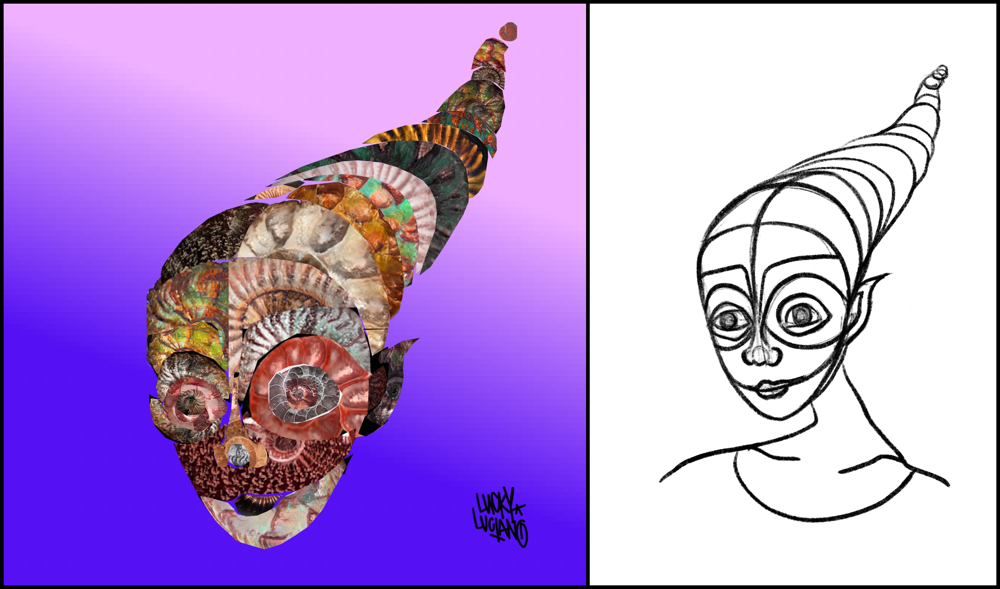
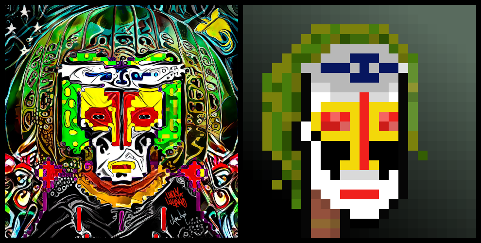
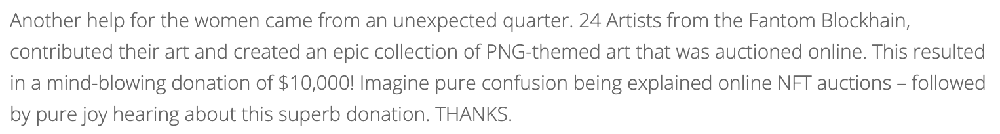
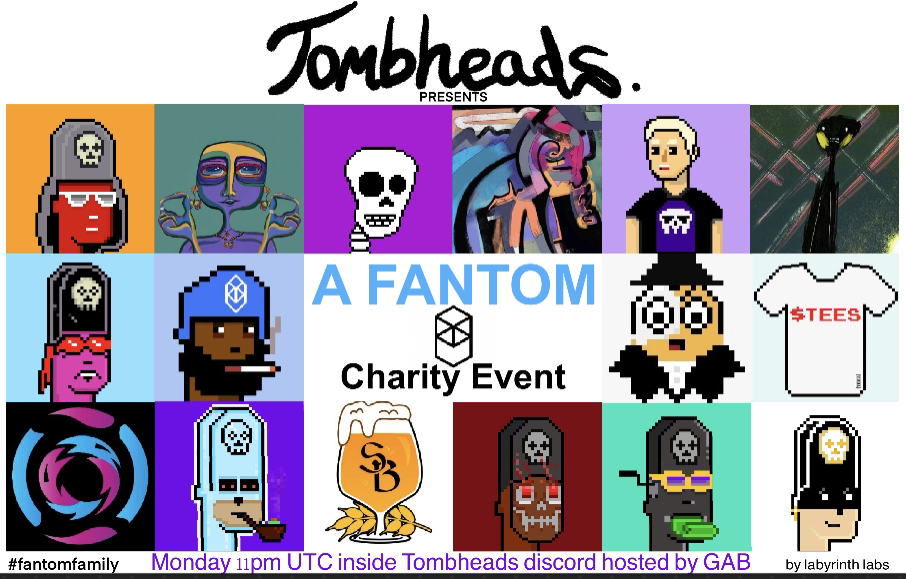

Charity
The BitDaemon team are always down for charity events!
We're not just out here tryna line ours and our holders'
pockets you know! Being part of such a commmunity-forward NFT space
has allowed us ample opportunities to contribute to positive change. Check some pieces that we've auctioned for charity below.
Extra special shout outs to TombHeads
and Fantom Art Collective (FAC) auction houses
who often host such events, waiving their usual commission!
If you're putting together a charity event
in which funds will be raised by auctioning NFTs, then please contact us!
Ukrainian Aid
The Daemonite Queen

The digital compound Daemonite appears to form in the presence of BitDaemons and other Daemonically corrupted entities. The Daemonite Queen was given shape and formed from a highly concentrated Daemonite sample, through processes currently beyond the understanding of our researchers. What we have determined, is that she thinks and acts to spread a message of peace and compassion that resonates far beyond the virtual confines of her blockchain domain.
The Daemonite Queen was one of the earliest pieces made by LuckyLuciano,
inspired by a sketch by superstar NFT artist Uman (shown on the right).
For months it went unminted, but when Fantom Art Collective (FAC)
and BushDoctor announced their charity auction we knew it would be a perfect fit.
The Daemonite Queen sold for 600 $FTM (~760 USD at the time) at the auction on March 12th 2022 - all proceeds to Ukrainian aid.
The total donation amount for the event totalled 7.3k $FTM (or 9.3k USD at the time).
Marketplace link:
The Daemonite Queen (DMN #24)
Papua New Guinea
The Kunai Daemon and DaemonPunk #117: Alani

Inspired by the traditional face paint and attire of the Kunai tribespeople of Papua New Guinea.
When PureNFTgems invited us to submit a piece
for a charity auction organised by him and hosted by the FAC auctionhouse, we thought 'fuck it, why not two?'
The Kunai Daemon and DaemonPunk #117: Alani sold together for 550 $FTM (~740 USD at the time) at the auction on March 26th 2022 - all proceeds to Kapuna Hospital in Papua New Guinea.
The total donation amount for the event totalled 10k USD - check this adorable thank you from the recipients (source):

Marketplace links:
The Kunai Daemon
DaemonPunk #117: Alani
Tomb Exploit
Tomb Unrekt Charity NFT #3

Made by LuckyLuciano for the StrangeBrew/Paintswap/TombHeads Charity auction.
Oh man this one's a blast to the past!
This collab/tribute piece to StrangeBrew and TombHeads was sold at the first ever TombHeads auction for 861 $FTM (~1248 USD at the time) on September 7th 2021 - 80% of proceeds went to those rekd by the $TOMB gatekeeper exploit (pre-Harry).
This was the first 'Daemon' design as we know them today that was ever minted and sold as an NFT - the true beginning of the journey. Cheers again StrangeBrew and TombHeads!

Marketplace links:
Tomb Unrekt Charity NFT #3 (TOMBSBNFT #3)